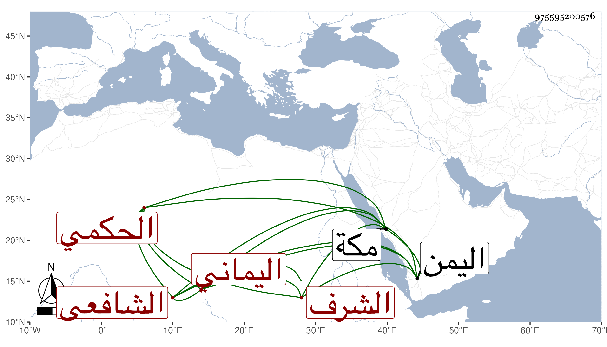

0902Sakhawi.DawLamic.ITO20230111-ara1.EIS1600.975595200576
Biography ID: 975595200576
423
أبو القسم بن أحمد بن إبرهيم بن محمد بن عيسى بن مطير بن علي بن عثمان الشرف الحكمي الأصل من حكماء حرض اليماني الشافعي والد أحمد الماضي ويعرف كسلفه بابن مطير من بيت كبير باليمن فأبوه وجده وأبوه من الثامنة ولد سنة ثلاث وسبعين وسبعمائة وخلف والده في التدريس والإفتاء وانتهت إليه الرياسة ببلده علما وعملا وصلاحا ووجاهة وله كرامات منها أن البدر حسن بن علي بن يوسف بن أبي الأصبع قال بينما أنا أتحدث معه بمكة في قدمة قدمها علينا إذ ضرب برجله الحائط ضربة شديدة فسألته عن ذلك فقال إن أخاك البدر حسينا راكب الآن في سفينة وهاج عليهم البحر فمالت السفينة وكادت أن تنقلب فدعمتها برجلي حتى اعتدلت وأنه ضبط التاريخ فلما جاء أخوه أخبره بذلك في ذاك الوقت مات في ربيع الأول سنة أربع وأربعين ببلده بيت حسين وعينه الأهدل بيوم السبت منتصفه ولكنه تردد في مولده بين سنة أربع أو ثلاث وقال انه خلف أخاه عبد الله فدرس وأفتى وأقام بالزاوية وفي حوائج أهل القرية من الاصلاح والشفاعات لحسن خلقه وأنه جمع في مناقب والده جزءا بل صنف في استحباب صلاتي رجب وشعبان زاعما انتصاره فيه ممن أنكرهما وأنه رد عليه في كتاب سماه الكفاية وذكره العفيف الناشري في ترجمة الأهدل فقال ومن المعاصرين له هناك الآن الفقيه الكبير العلامة الصالح أكثر العلماء في ذلك القطر وإلى فتواه يسكنون وبفعله يقتدون أخبرني الصنو حافظ الدين عبد المجيد بن علي الناشري أنه اجتمع به في سنة ثمان وثلاثين فأثنى عليه بحسن الخلق وسهولة الطبع وأنه محبوب الطلعة مشكور من رآه أحبه انتهى وكذا اجتمع بابن زقاعة وعبد الرحمن بن اليافعي وكان يعظم صاحب الترجمة ويرفع من شأنه رحمه الله وإيانا .
